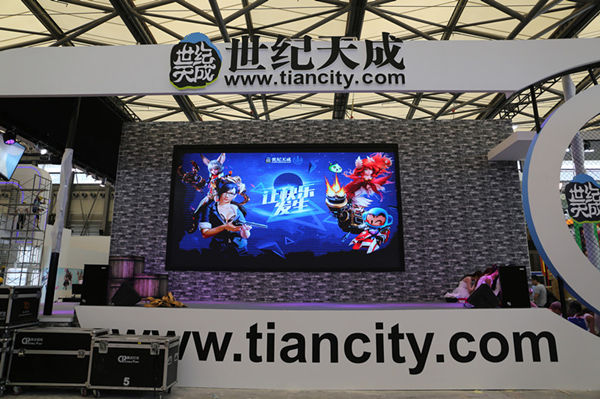
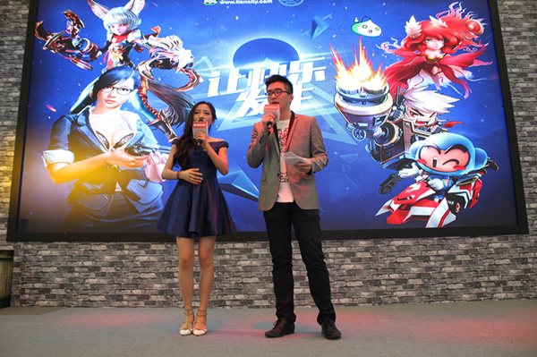
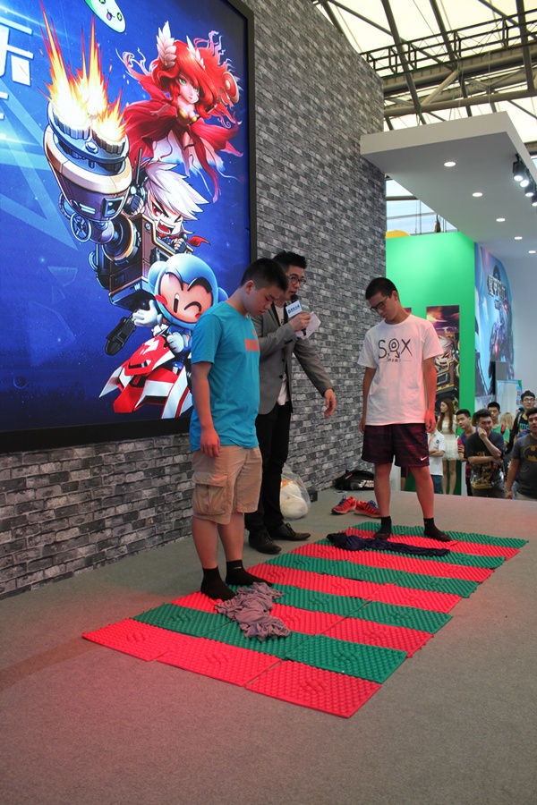
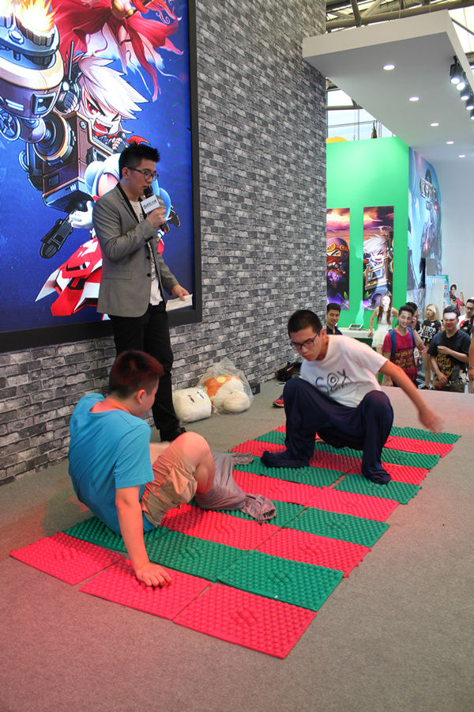
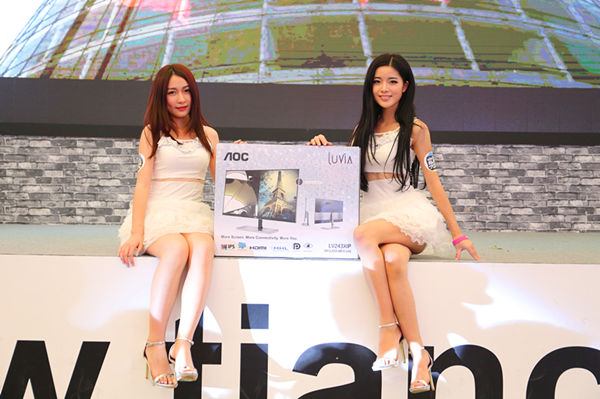
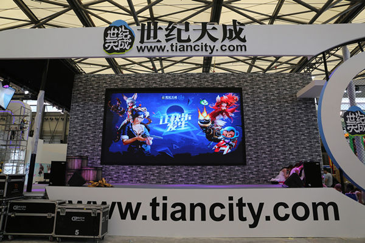

比火热更火热 2015世纪天成Chinajoy迎来第3日
发布日期：2015年08月01日
备受玩家喜爱的ChinaJoy进行到了第三天，玩家们的将热仿佛要将现场融化，火爆程度一时无两！世纪天成E6-10-1展台前更是人潮涌动，拍妹子、抢周边、亲手试玩游戏的……当然，世纪天成也准备了足量的周边奖品送给各位玩家！一起来享受这个玩家们的party吧！



//www.tiancity.com/
8月1日
发布日期：2015年08月01日
备受玩家喜爱的ChinaJoy进行到了第三天，玩家们的将热仿佛要将现场融化，火爆程度一时无两！世纪天成E6-10-1展台前更是人潮涌动，拍妹子、抢周边、亲手试玩游戏的……当然，世纪天成也准备了足量的周边奖品送给各位玩家！一起来享受这个玩家们的party吧！
